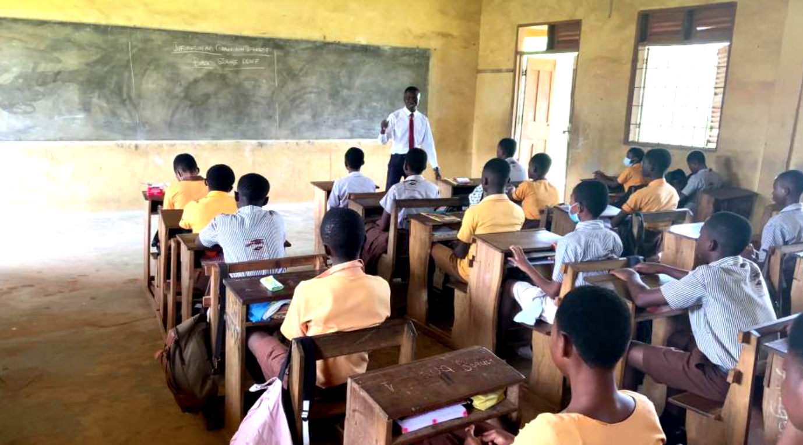
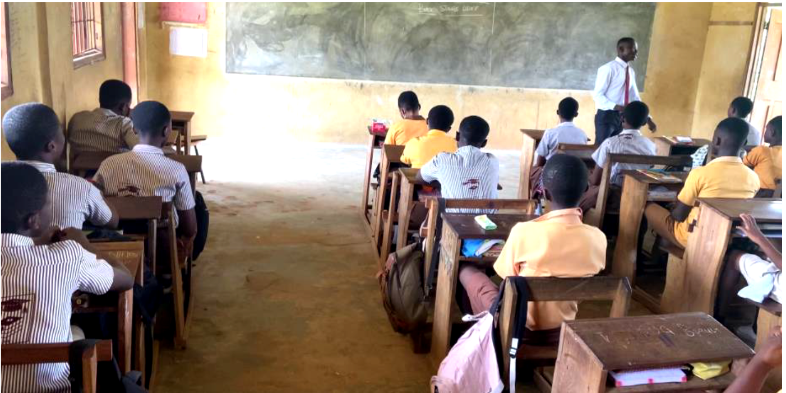
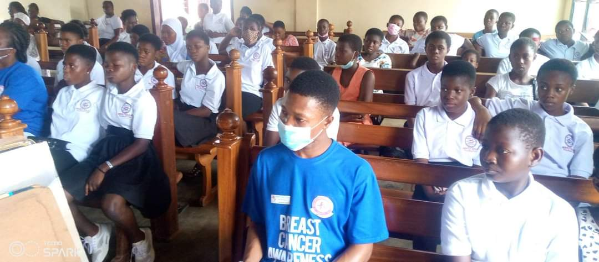
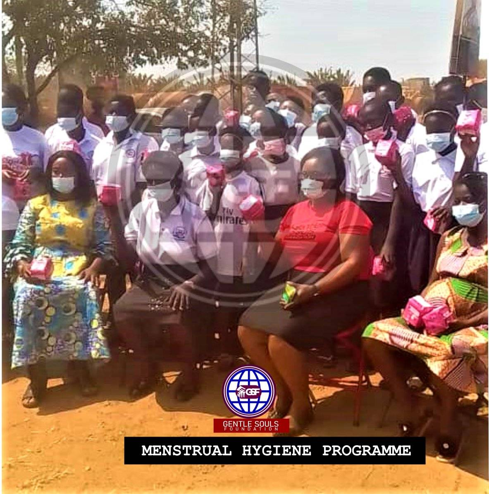

I am an emerging scholar in Information Systems with a background in Information Technology Education and digital systems development. My academic interests lie at the intersection of digital engagement, human-centered system design, and the application of technology to enhance learning and organizational effectiveness. I am particularly interested in how digital tools can be leveraged to improve accessibility, user experience, and inclusive participation in both educational and professional environments.
My work integrates research, technical development, and community engagement. I have contributed to projects in educational technology, digital literacy, and system design, while also participating in collaborative research addressing real-world challenges. Through these experiences, I have developed a strong foundation in both qualitative and technical approaches to problem-solving. My long-term goal is to contribute to innovative, evidence-based solutions that support digital transformation and inclusive development across diverse communities.
-
Digital Engagement & Storytelling
Exploring how digital technologies can be used to communicate ideas effectively, enhance learning experiences, and support interactive content delivery. -
Educational Technology
Integration of digital tools and platforms to improve teaching methodologies, student engagement, and learning outcomes. -
Human-Centered System Design
Focus on usability, accessibility, and user experience in the design and development of interactive systems. -
Technology for Social Impact
Leveraging technology to promote digital inclusion, empower underserved communities, and support sustainable development initiatives.
-
Impact of Remote Work on Employee Productivity and Job Satisfaction
Case study research examining how remote work influences employee performance, engagement, and overall job satisfaction across different work environments.
Tools: Survey Analysis, SPSS, Data Visualization
Co-authors: Paul Tandoh Asare -
Digital Literacy and Technology Adoption in Underserved Communities
Community-based research exploring factors influencing digital literacy levels and the adoption of technology in underserved populations.
Tools: Field Surveys, Interviews, Data Analysis
Co-authors: Paul Tandoh Asare -
Secure System Design and User Awareness
Exploratory research focusing on secure system practices and improving user awareness to reduce vulnerabilities in digital environments.
Tools: System Analysis, Security Frameworks, User Studies
Co-authors: Paul Tandoh Asare -
AI-Driven Denoising and Transcription of Air Traffic Control Audio
Research project applying deep learning techniques to improve the clarity and transcription accuracy of Air Traffic Control communications.
Tools: Python, PyTorch, Whisper, Hugging Face, Librosa
Co-authors: Abdul Latif Abdul Ganiyu, Paul Tandoh Asare
-
Using Phonic Method to Help Basic Three Learners of St. Monica’s Primary School Improve Their Reading Skills in English Language
Co-authors: Esther Bador, Paul Tandoh Asare -
Design & Implementation of an Electronic Voting System for Akenten Appiah-Menka University of Skills Training and Entrepreneurial Development
Co-authors: Denis Ayamba, Waponde Derrick, Umar Abdul Hafiz, Nyarko Graham Kwadwo, Paul Tandoh Asare -
School Management System: Enhancing the Evaluation of Academic Performance of Students at the Basic Level (Case Study: KNUST Junior High School)
Co-authors: Hafix Aminu, Paul Tandoh Asare -
Securing Ghana Police Data Communication Systems
Co-authors: Amos Frimpong, Paul Tandoh Asare
-
School Management System
Academic platform designed to manage student records, communication, and administrative workflows, improving efficiency in school operations.
Tools: HTML, CSS, JavaScript, PHP, MySQL -
Event Voting System
Real-time digital voting platform with verification mechanisms to ensure transparency, accuracy, and fraud prevention in elections.
Tools: JavaScript, PHP, MySQL -
Find Hostel Platform
Web-based housing platform developed to improve student accommodation search experience through location filtering and user-friendly design.
Tools: HTML, CSS, JavaScript, PHP
- Research Methods Facilitator — University of Education, Winneba (mentored students in academic writing and research)
- ICT Teacher (Internship) — Denkyemouso M/A Basic School
- Software Training Facilitator — The Trust Hospital (trained staff on EMR system usage)
- Workshop Facilitator — Infotess Community of Practice (technical training & peer support)
- STEM Outreach Educator — Community programs and digital literacy initiatives
- CCTV Control Room Technician — The Trust Hospital (2024–Present) Surveillance systems management, digital system monitoring, and technical support. Trained hospital staff on Electronic Medical Records (EMR) system to improve operational efficiency and user adoption.
- IT Infrastructure (National Service) — Parliament House of Ghana (2022–2023) LAN/WAN support, firewall configuration, VPN setup, and user technical support.
- Freelance Web Developer — Developed user-focused web platforms and digital systems
- Founder & Facilitator — Girls in Tech Program (Kumasi–Atwima Boko 2024, Mampongten 2025)
- Guest Speaker — Digital Literacy & Responsible Mobile Use (Atwima Boko Roman Catholic Church, 2024 & 2025)
- Led mobile money fraud and digital safety awareness workshops (2024–2025)
- Organized ICT training programs in Sekruwa and Mampong communities
- Delivered digital literacy training to students and non-technical community members



